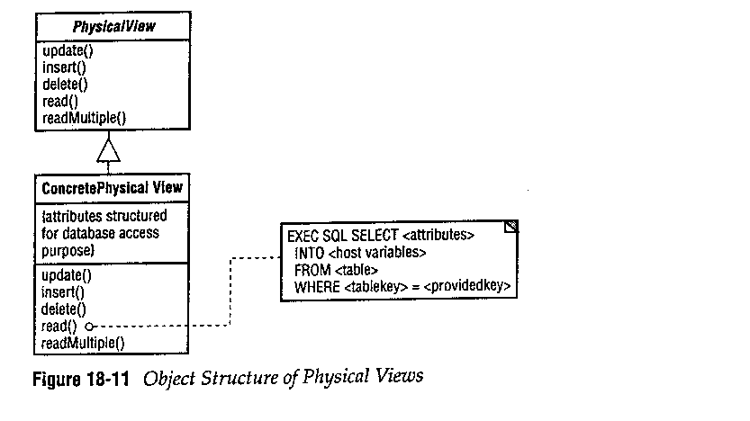
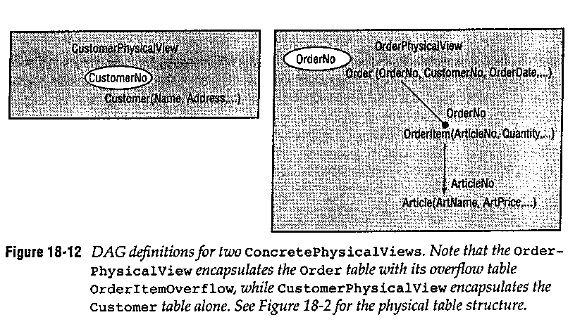

Physical View Pattern
Környezet
A Relational Database Access Layer használata, a logikai és a fizikai
réteg szétválasztása.
Probléma
Milyen könnyen kezelhetõ interfész
kell az adatbázishoz?
Befolyásoló tényezõk
- Egyszerûség a hatékonyság ellenében
Hatékonyan használható adatbázisstruktúra általában nem
normálformájú, ez a fizikai réteg felépítését bonyolítja.
- Flexibilitás
Az adatbázisszerkezet és a logikai réteg függetlenedésével
azt is el szeretnénk érni, hogy az adatbázis által nyújtott
eszközöket jobban kihasználhassuk: statikus és dinamikus SQL,
egyéb API-k. Ezekrõl magasabb szintû rétegeknek nem kell
tudniuk.
Megoldás
Minden táblát és nézetet egy ConcretePhysicalView-ba
kell ágyazni. Az egységes felület kedvéért ezek a
ConcretePhysicalView-k a PhysicalView-ból
származzanak. Ezek az objektumok az adattagokat SQL utasítások
segítségével érik el.
Példa


Az OrderPhysicalView nézet módosíthatja az
Order-t és az OrderItem-et, de
az Article módosítására egy másik
ConcretePhysicalView szolgál.
Következmények
- Egyszerûség
A minta elrejti az optimalizációt és az adatbázisprogramozást.
Más feladatuk nem lévén könnyen implementálhatók.
A QueryBroker elhagyásával olyan mértékben
kapcsolódhat a HierarchicalView osztályokhoz,
hogy esetleg azok is elláthatják e minta feladatát.
- Flexibilitás
Az adatbázikód beágyazása miatt ezen osztályok dönthetik el,
hogy milyen adatbázi API-t használnak. Ez a különbözõ
módszerek hatékonyságának teszteléséhez hasznos, és esetleg
futás közbeni APi cserét is lehetõvé tesz.
- Hatékonyság
Az optimalizálás lehetõsége növeli a hatékonyságot.
- Tömeges használat problémája
Generátor használatával az osztályok tömeges létrehozása
megoldható.
Implementáció
- Mit kell becsomagolni?
Minden ConcretePhysicalView osztály
egy fizikai táblán végzendõ
read/write/update/delete SQL utasításokat
csomagol be. Már ezen a szinten össze lehet kapcsolni két
táblát, ami mindig együtt kezelendõ. Kiindulásképp minden
gyökérbeli táblához létrehozható egy osztály
(Customer, Article). Az összetett
objektumokat szintén egy osztály reprezentálhatja
(Order/OrderItem).
- Csak olvasható nézetek becsomagolása
Általában a nézetek írására nincs lehetõség. Mivel egy táblát
több ConcretePhysicalView is láthat kiindulásnál
érdemes táblánként egy osztálynak engedélyezni az írást.
- Programozási eszközök
A ConcretePhysicalView osztályok általánosak,
generátorral, makróval, templáttal létrehozhatóak.
- Tárolt eljárások és egyéb API-k használata
A szétválasztás miatt ezek az eszközök is bevethetõek.
Variációk
A minta környezetében minden elhagyható. Ez azonban csak
egyszerûbb alkalmazásnál igaz.